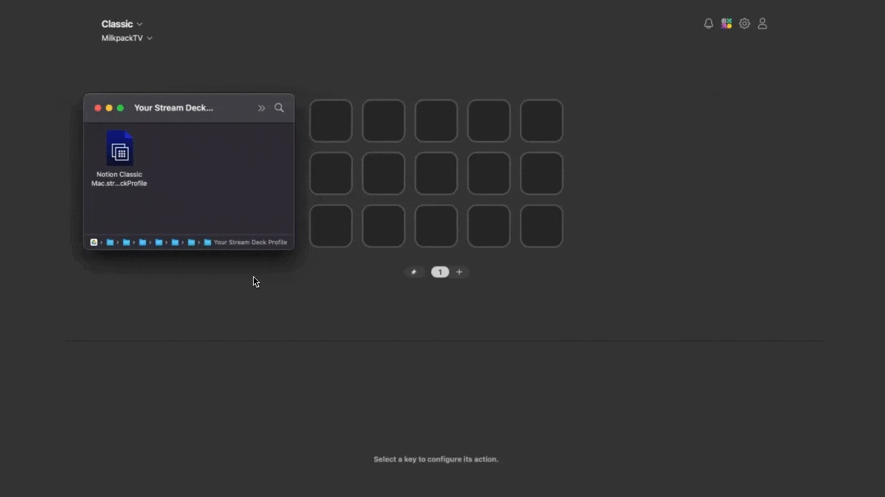
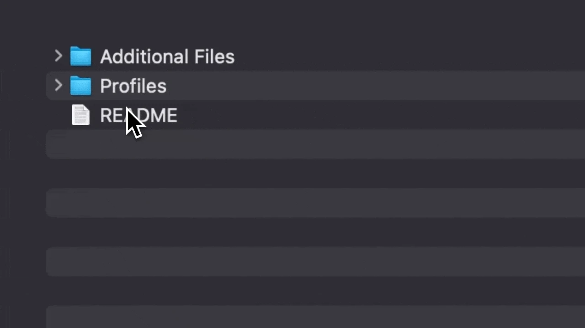
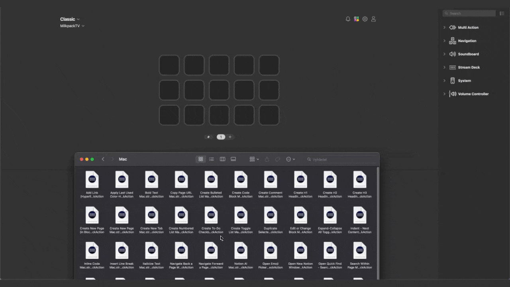

If you got your hands on a pack of Stream Deck profiles and are struggling with the setup process, I’ll run you through it in under 2 minutes.
Installing Stream Deck Profiles is extremely straightforward.
{kind=link}

Navigate to the .streamDeckProfile you downloaded
Double-click the file
The Stream Deck software will open with a popup asking which device the profile should be installed on
Choose your device from the dropdown
Click Install and you’re all set
But what if there are multiple files in the package I just downloaded?
In the case of my own profile packs from ‘MilkpackTV,’ the .streamDeckProfile files are placed under a unified folder structure, so it’s easy to navigate to the profile you need as fast as possible.
If you, for example, have the Stream Deck MK2 and are on Windows, you would:
1. Go to the Profiles folder first
2. Then the Windows folder
3. And choose a .streamDeckProfile file that has Classic at the end of its name
There are some exceptions to this rule if there are more color themes, different platforms like Browser and App, and so on… but overall, it’s the same.
{kind=link}

Can I import a single key instead of the whole profile?
Yeah, you can! Again, this only applies to packs from MilkpackTV, but there are individual Stream Deck keys for all shortcuts used in the profiles.
These are stored in the Action Keys folder inside Additional Files.
1. Just find the shortcut you want to use
2. Double-click the action file
3. And paste it into the Stream Deck software
{kind=link}

That should cover everything. If you still need any help setting these up, msg me at support@milkpack.tv and I’ll get back to you as soon as I can.